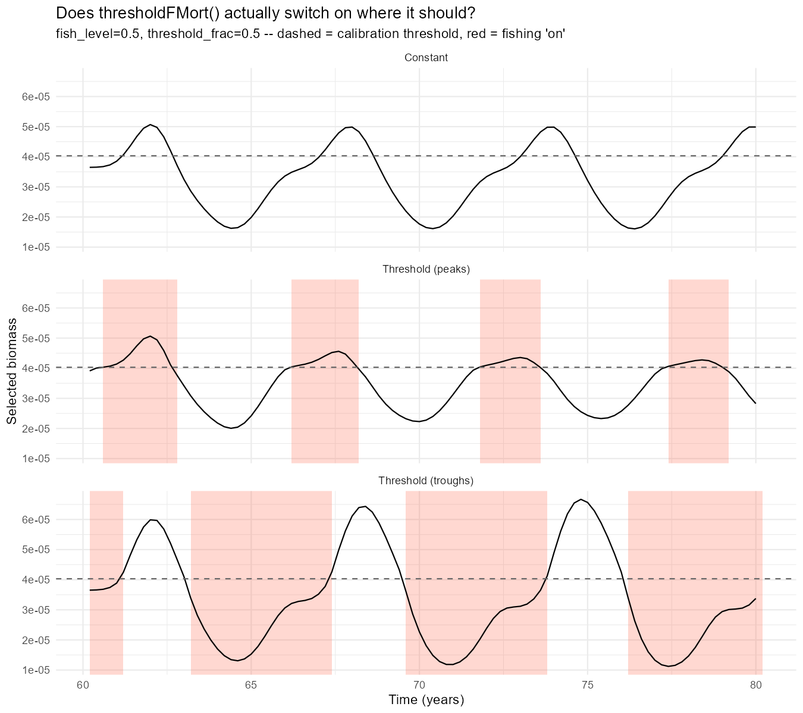
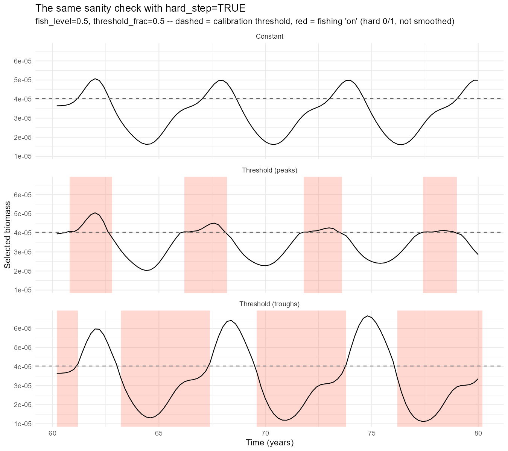
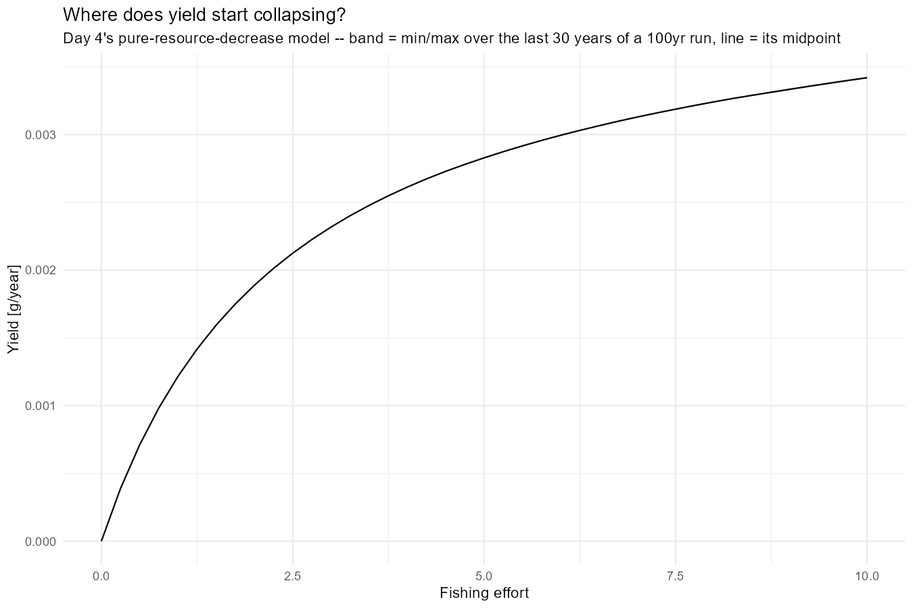
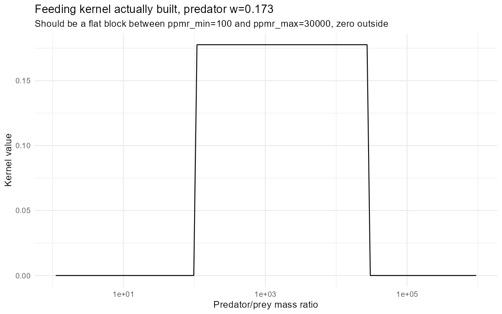
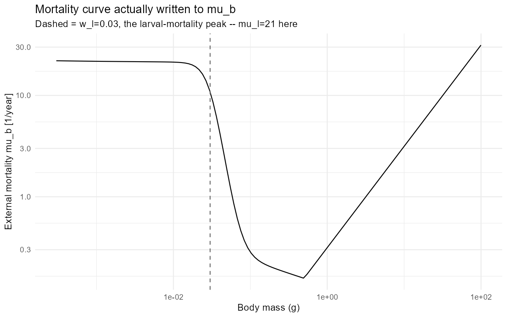
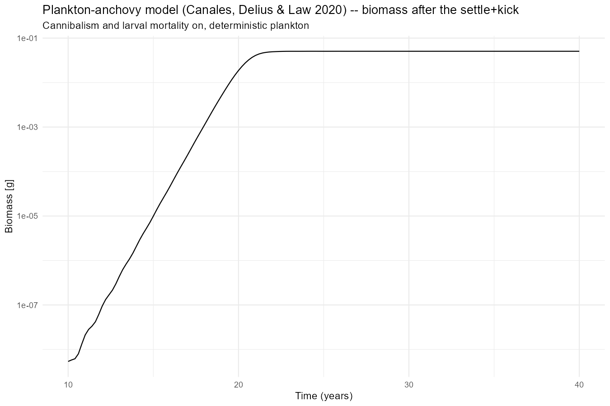
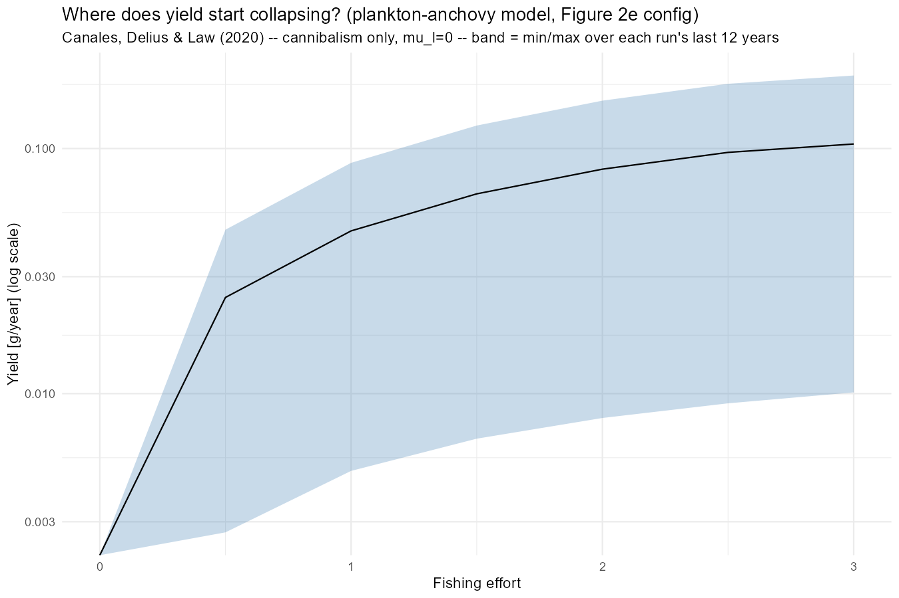

Day 37: Hard vs. Smooth, and a Problem With the Model Itself
research
mizer
anchovy
model-validation
erepro
blog
Closes out Day 36’s hard-vs-smooth question, then a routine parameter check turns up something serious: erepro for the Anchovy model this project has used since Day 18 is nearly 80,000, when it should sit between 0 and 1. Day 4’s simpler model doesn’t have that problem, but it turns out not to oscillate either so the day ends by porting the actual published plankton-anchovy model this project’s Anchovy model was supposed to be based on, and finding that it’s cannibalism alone that produces a genuine limit cycle.
Author
Samia
Published
August 11, 2026
Closing Out Hard vs. Smooth
Day 36 left one thing open: Section 2b found hard_step=TRUE and the smooth logistic switch tell different ecological stories, but only at a single grid point (fish_level=7.8). Item 3 on yesterday’s list was to check whether that divergence holds everywhere, or just there. Today reused yesterday’s exact sanity-check setup (same 60-year settle, same calibration, same Constant run) and reran just the two threshold cases with hard_step=TRUE, at the more modest fish_level=0.5, threshold_frac=0.5 used throughout Day 34 Section 3.

Smooth switch. (Day 36)

Hard switch. (Day 37)
They’re visually indistinguishable. Same shading windows, same shrinking peaks in Threshold (peaks), same widening, diverging swings in Threshold (troughs). Whatever separates hard from smooth, it isn’t present at this point in the grid. The Section 2b divergence looks like something that specifically emerges at higher fish_level, not a difference baked into the two mechanisms everywhere. Worth keeping in mind before generalising from one comparison point, which is exactly what Day 36’s own “What’s Next” flagged.
That would ordinarily be the whole story for today. It isn’t.
Then a Bigger Problem Turned Up
Wrapping up the hard-vs-smooth comparison meant looking closely at the params object again, and a routine check of species_params$erepro turned up something that makes today’s comparison, and arguably everything built on this model since Day 18, beside the point.
erepro is a fraction. It has to sit between 0 and 1. mizer doesn’t enforce that anywhere - it’s just a number in species_params, set (or in some workflows solved for) alongside everything else, and nothing stops it landing outside a sane range if the rest of the energy budget doesn’t balance.
Code
library(mizer)library(mizerExperimental)# The model this project has used since Day 18 -- custom w_min/w_max/w_mat,# custom kappa/alpha/gamma, and ks=0 (no basal metabolic cost).make_params_anchovy <-function(lambda =2.05, resource_decrease =0.001) { no_w <-round(log(66.5/0.0003) /0.1) p <-newSingleSpeciesParams(species_name ="Anchovy", w_min =0.0003, w_max =66.5,w_mat =10, no_w = no_w, lambda = lambda,kappa =100*exp(-6.9* (lambda -1)),alpha =0.1, gamma =750, ks =0) r <-resource_rate(p) * resource_decreasesetResource(p, resource_rate = r, resource_dynamics ="resource_semichemostat")}# Day 4's model -- pure resource decrease, mizer's own defaults for# everything else. No beta/sigma override either: just lambda and a scaled-# down resource_rate.make_params_day4 <-function(lambda =2.05, resource_decrease =0.001) { p <-newSingleSpeciesParams(lambda = lambda) r <-resource_rate(p) * resource_decreasesetResource(p, resource_rate = r, resource_dynamics ="resource_semichemostat")}data.frame(model =c("Anchovy (Days 18/34/36/this morning)", "Day 4 (mizer defaults)"),erepro =c(make_params_anchovy()@species_params$erepro,make_params_day4()@species_params$erepro))
model erepro
Anchovy Anchovy (Days 18/34/36/this morning) 78628.345723
Target species Day 4 (mizer defaults) 0.899483
The Anchovy model’s erepro comes out at just under 80,000, which is roughly five orders of magnitude past the top of its valid range. Day 4’s model doesn’t have this problem - it does, however, have a very big one that we’ll see shortly.
What this doesn’t mean: the mechanisms built on top of the Anchovy model such as thresholdFMort(), the peaks/troughs comparisons, the hard-vs-smooth question closed out above, aren’t necessarily wrong as code. They’ve been checked carefully, repeatedly, over several days. What it does mean is that every specific number those checks produced describes the internal dynamics of a model whose reproduction term is off by five orders of magnitude, not a biologically meaningful anchovy population. Comparisons within a given day’s scan, run under the same broken model, may still say something about how the fishing rule behaves as a piece of mechanism, but nothing from Day 18 onward should be read as a claim about actual fish stocks.
Moving to Day 4’s Model
Going forward, the fishing-rule work moves onto Day 4’s model: newSingleSpeciesParams(lambda = 2.05), mizer’s own defaults for everything else, resource_rate scaled down by 0.001 under semichemostat dynamics: pure resource decrease, no custom species parameters at all. Per the table above, its erepro doesn’t blow up.
Does the Cycle Survive the Switch?
Item 3 on yesterday’s list was to check whether a limit cycle still exists under Day 4’s model before redoing any of the threshold-fishing work on it. Reused the Day 34 effort sweep (effort = 0 to 10 by 0.25, 100-year run, band = min/max over the last 30 years) and looked at whether biomass actually varies over that window, rather than just plotting a mean.

Day 4’s model, same effort sweep as the Anchovy comparisons below.
It doesn’t. At effort=0, biomass ranges from 0.0046217 to 0.0046218 over the sampled window – a 0.002% spread. At effort=10, the top of the sweep, it’s 0.003640 to 0.003653 – 0.4%. That’s floating-point settling noise around a fixed point, not a cycle. Day 4’s model – mizer’s own defaults plus a scaled-down resource – never had the oscillatory dynamics Days 18-36 were studying; there’s nothing here to rebuild the threshold rule on top of. Patching the Day 18 Anchovy model’s erepro isn’t enough either – what’s needed is a model that actually cycles, which means going back to where the Anchovy parameterisation was supposed to come from in the first place.
Porting the Actual Paper
The Day 18 Anchovy setup was always a hand-assembled approximation of the plankton-anchovy model described in Canales, Delius & Law (2020) (custom w_min/w_max/w_mat, custom kappa/alpha/gamma, ks=0) not the paper’s own parameterisation. Today’s fix was to stop approximating and port the real thing: the notebook at rpubs.com/gustav/plankton-anchovy (source: github.com/sizespectrum/plankton-anchovy), onto the mizer version actually installed here. That means Appendix B’s parameters verbatim, the paper’s own size-dependent background/senescent/larval mortality (written straight to mu_b, bypassing mizer’s default calculation), its own normalised box feeding kernel, and its own logistic plankton-with-immigration resource, dispatched by name the same way this project’s other custom rate functions have been since Day 20.
Diagnostics before results: rebuilt the feeding kernel and the mortality curve and plotted what mizer actually constructed, rather than trusting that the port was faithful because it ran without erroring.

Feeding kernel actually built.

Mortality curve actually written to mu_b.
Both match the paper: the kernel is a flat block between ppmr_min=100 and ppmr_max=30000, zero outside; mu_b shows the larval-mortality bump at w_l sitting on top of the background/senescent curve, not a smooth generic allometric line. And erepro for this build comes out at exactly 0.1 (epsilon_R from Appendix B) - safely inside [0,1]. This parameterisation sets erepro directly from the paper rather than solving for it against the rest of the energy budget, so the Day 18-36 bug doesn’t apply here regardless of what caused it.
Three Configurations, One That Actually Oscillates
Ran three variants from the same recipe - 10-year settle from a power-law abundance, knock the population down by 10^7, project on:
Full/“realistic” config: cannibalism on (interaction=1) and larval mortality on (mu_l=21).
Larval mortality only: cannibalism off (interaction=0), mu_l=21.
The paper’s own Figure 2e configuration: cannibalism only, mu_l=0. This is the one the notebook itself uses to demonstrate a sustained cycle.
report_oscillation() ,the script’s own objective readout, counting local maxima/minima rather than eyeballing a widget, finds plenty of turning points in all three over the first 20 post-kick years. That’s misleading on its own: it mostly reflects the settle transient still ringing down, not a sustained cycle. Restricting to the last 5 years of each run (t>=25, well clear of the transient) separates the two:
Configuration
Anchovy biomass, t≥25 (g/m³)
max/min ratio
Full (cannibalism + larval mortality)
0.05056 – 0.05061
1.00
Larval mortality only (no cannibalism)
0.1823 – 0.1873
1.03
Figure 2e (cannibalism only, mu_l=0)
0.0934 – 0.543
5.82
Only the cannibalism-only configuration is still oscillating once the transient has cleared.It’s a genuine, sustained, nearly six-fold swing in Anchovy biomass, matching the paper’s own reported Figure 2e cycle. The other two settle to a fixed point: adding larval mortality on top of cannibalism, which is what the “full, realistic” label promised, actually kills the cycle rather than making the model more interesting. Cannibalism on its own is doing all the work.

Figure 2e reproduction: cannibalism only, mu_l=0 – the configuration that actually cycles.
The interactive version below puts plankton, total Anchovy, and small-Anchovy biomass together on one log axis, matching the paper’s own Figure 2e – the shape a static PNG on a fixed axis range can hide, since deep troughs get clipped and a real oscillation ends up looking flat.
The same widget is also written to interesting_plots/day37_anchovy_fig2e_reproduction.html as a standalone file, for reuse outside this post.
Fishing Effort on the Real Cycle
Reran the effort sweep from the “Does the Cycle Survive the Switch?” section above, this time on the Figure 2e configuration, since it’s the one already checked against the paper’s own text.

Plankton-anchovy model, Figure 2e configuration: cannibalism only, mu_l=0.
The band tells the whole story. Day 4’s model above showed a ribbon too thin to see – min and max effectively equal at every effort. This one doesn’t: at effort=3, yield ranges from 0.0101 to 0.199 g/year over the sampled window, nearly a twenty-fold spread, and the ribbon is wide like that across the entire swept range. The cycle survives fishing, at least up to effort=3. Yield is also still rising at that point – the sweep’s own upper bound – so this hasn’t found where it actually collapses yet.
Also Today: Wiring Claude Up to Mizer Properly
Separately from the modelling, set up mizerAgents::setup_mizer_agent() and connect_mizer_agent() for this project. The former generates MIZER-AGENTS.md plus per-tool skill files describing how to call mizer correctly; the latter connects an assistant to this live R session over MCP, so it can read the installed package’s actual help pages and run code in-session instead of guessing and working in a disconnected scratch script.
The motivation is the same failure mode this whole entry has been chasing: a value that’s quietly wrong because nothing checked it against the real, current definition. Mizer’s API has moved on since any LLM’s training data, so code written from memory – an assistant’s, not just a person’s – can call a function that no longer takes those arguments, run without erroring, and hand back a plausible-looking wrong number. Worth watching for, going forward, in exactly the same way the erepro bug above needed watching for.
What’s Next
Day 4’s model is dropped as of today, not just deprioritised – the effort sweep above shows it never had a cycle to lose, so there’s nothing left to audit or rebuild on it.
Find where the Figure 2e configuration’s yield actually collapses. Today’s sweep only went to effort=3, and yield was still rising at that boundary – extend anchovy_effort_seq further to find the real peak, not just the edge of the range tested.
Rebuild the threshold-triggered fishing rule on the Figure 2e configuration – cannibalism only, mu_l=0 – since that’s the one that actually cycles. See whether the Days 18-36 peaks/troughs finding (Threshold (peaks) cheaply damping the cycle, Threshold (troughs) failing to help) holds up on a model that both isn’t broken and genuinely oscillates.
Auditing the port’s other parameters and working out why larval mortality kills the cycle are both real open questions, but not this project’s priority right now – the port’s parameters come straight from a published paper rather than a derived/calibrated value like the broken erepro was, and the cycle’s mechanism is a side curiosity next to actually using it.